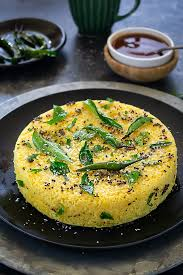
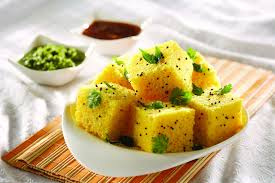

Khaman Dhokla
What is Khaman Dhokla
Khaman dhokla is a steamed savoury cake from the state of Gujarat, India, where it is usually prepared for breakfast (with Masala Tea) or as a snack (Gujaratis call these kind of snacks farsan). This dhokla has a soft, spongy, fluffy texture making it light and airy. The flavours are tangy, a little spicy and slightly sweet. Being nutritious and low in calories, this is a great anytime snack. This recipe is quick and easy, and does not need fermenting.

Ingredient List For Khaman Dhokla Recipe
- Besan (gram flour)
- Yogurt
- Water
- Lemon juice
- Semolina (rava)
- Ginger-green chili paste
- Turmeric powder
- Sugar
- Salt
- Eno fruit salt
- Oil
- Mustard seeds
- Curry leaves
- Green chilies (slit)
- Asafoetida (hing)
- Fresh coriander leaves (chopped, for garnish)
- Grated coconut (for garnish, optional)

How to make Khaman Dhokla
Preparation Of Dhokla Batter
1. In a mixing bowl, combine besan (gram flour), yogurt, water, lemon juice, semolina (rava), ginger-green chili paste, turmeric powder, sugar, and salt to make a smooth batter. Let it rest for about 15-20 minutes.
2. Grease a steamer plate or a shallow dish with oil to prepare the Dhokla mixture. Make sure it fits comfortably in your steamer.
3. After resting the batter, add Eno fruit salt to it and mix gently. You'll notice the batter will become frothy and rise.
Baking Process Of Dhokla
4. Quickly pour the frothy batter into the greased plate or dish. Tap it gently to spread the batter evenly.
5. Steam the batter in a steamer or idli cooker for about 15-20 minutes or until a toothpick inserted into the center comes out clean.
6. Once done, remove the steamed Dhokla from the heat and let it cool for a few minutes.
7. After it has cooled a bit, cut the Dhokla into square or diamond-shaped pieces using a knife.
8. In a separate small pan, heat oil. Add mustard seeds, curry leaves, green chilies, and asafoetida (hing). Allow the mustard seeds to splutter and the curry leaves to become crisp.
9. Pour this tempering mixture over the steamed Dhokla pieces to enhance the flavor.
10. Garnish with freshly chopped coriander leaves and grated coconut, if desired.
11. Your Khaman Dhokla is ready to be served. Enjoy it with green chutney or tamarind chutney.
